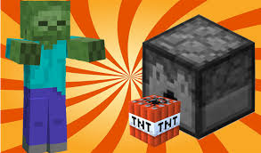
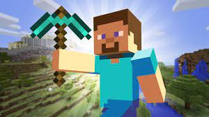
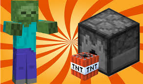
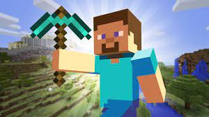
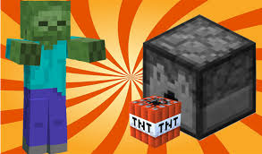
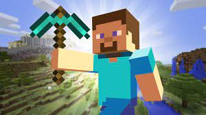

Մայնկրաֆտ (անգլ.՝ mine «հանք», «փորել» և craft «արհեստ»), համակարգչային խաղ է, որը ստեղծվել է 2009 թ. շվեդ ծրագրավորող Մարկուս Պերսոնի կողմից, ով ավելի հայտնի է հանրությանը «Նոտչ» մականվամբ։ Խաղի կատարելագործման համար մեծ դեր է խաղացել Մարկուս Պերսոնի կողմից ստեղծած Mojang կորպորացիան, որի անդամները եղել են նրա ծանոթները և ընկերները։ Խաղը ստեղծվել է ընդամենը երկու շաբաթում։ Սկզբում այն մտածված է եղել որպես Infiniminer խաղի կլոն, բայց հետո Պերսոնը ուզեցավ նրան տալ Dwarf Fortress խաղի գեյմփլեյը։ Խաղը գրվել է Java ծրագրավորման լեզվի միջոցով` օգտագործելով LWJGL հանրագիտարանը։ Երկար ժամանակ խաղը եղել է փորձարկման շրջանում և միայն 2011 թվականի նոյեմբերի 11-ին դուրս եկավ խաղի պաշտոնական առաջին տարբերակը։ Minecraft-ը հասանելի է Windows, Linux, OS X, Xbox 360, Android, iOS, PS3 և Raspberry Pi-ի վրա։ Խաղի աշխարհը (լանդշաֆտը, գործիքները և զենքերը, մոբերը, խաղացողը) կազմված է բլոկներից։ Խաղն ունի 4 ռեժիմ՝ Գոյատևում (անգլ. Survival), Հարդքոր (անգլ. Hardcore), Կրեատիվ (անգլ. Creative) և Արկածների որոնում (անգլ. Adventure)։ Գոյություն ունի ընդհանուր քաղաքային լեգենդ, որտեղ Նոտչի եղբայրը, որը գոյություն ունի միայն Minecraft-ում, Հերոբրինն է (անգլ. Herobrine), որն ապրում է դժոխքում, ունի սպիտակ աչքեր, բաց կապույտ շապիկ և մանուշակագույն ոտքեր, այնպես` ինչպես Սթիվը։ Այնուամենայնիվ, Mojang-ը հաստատել է, որ Հերոբրինը երբեք գոյություն չի ունեցել Minecraft-ում, և պլաններ չկան ավելացնել Հերոբրինը։


| mob | zombi | criper | sard | Drakon |
| food | hac | xndzor | mis | geghci |
| qarer | bedrok | obsidyan | almaz | ender qar |
| mard | stiv | alex | nub | ender men |